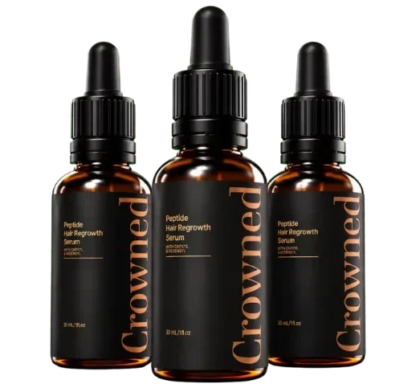

What Is CrownEd And How Does It Work?
Most hair products sit on the surface and call it a treatment. CrownEd was formulated around a problem that happens four millimeters below your scalp — where nothing you’ve tried has ever reached.
Here’s the issue nobody explains. After a certain age, a hormone called DHT begins wrapping itself around the root of each hair strand. It cuts off blood flow and starves the follicle. The strand gets thinner, weaker, then falls — and nothing grows back to replace it. That’s not “normal aging.” That’s a strangled root.
Shampoos wash away in sixty seconds. Biotin pills flush out within hours. Scalp oils sit on top of the skin. None of them were engineered to penetrate four millimeters down where DHT does its damage. That’s the gap CrownEd was built to close.
The formula uses a copper peptide compound — GHK-Cu — small enough to cross the scalp barrier and reach the root. Once there, it disrupts DHT’s grip and restores circulation to the follicle. But freeing the root is only the first step. The scalp tissue surrounding it also needs to be rebuilt, and the new strand needs raw material to grow strong.
That’s why CrownEd delivers a three-stage system in a single mist: free the root, rebuild the ground, feed the new hair. Two sprays, morning and night. Ten seconds. The manufacturer is upfront about what this is not — not a shampoo, not a pill, not a face serum relabeled for the scalp. It’s a topical peptide mist formulated at scalp-specific concentration, produced in an FDA-registered, GMP-certified American facility.
Results build over weeks, not days. The shedding tends to slow first. New growth follows on the hair’s own biological schedule — which is exactly why the 90-day guarantee exists.
CrownEd Ingredients
Four active ingredients, each with a defined role in the three-stage system. No proprietary-blend label. No filler compounds hiding behind a long list of names.
- Copper Peptide (GHK-Cu) (The Root Liberator): A fragment of three amino acids bound to copper — small enough to penetrate four millimeters below the scalp surface. It targets the DHT wrapped around each hair root, disrupts its grip, and restores blood flow and nutrient delivery to the follicle. This is the core of the entire formula.
- Niacinamide (Vitamin B3) (The Scalp Rebuilder): Once the root is freed, the ground it grows out of still needs repair. Niacinamide supports the rebuilding of a thicker, stronger, better-supplied scalp bed — the kind of environment a new strand needs to survive long enough to become visible.
- Panthenol (Vitamin B5) (The Calm Layer): Addresses the itching, flaking, and dryness that snap new strands before they have a chance to grow. It shuts off the surface-level inflammation that undermines the deeper work the copper peptide is doing.
- Topical Biotin (Vitamin B7) (The Growth Fuel): Most people swallow biotin and lose all of it within hours. Delivered directly onto the scalp — alongside a peptide that has already opened the door — it finally reaches the root and helps build each new strand from the inside out.
The sequence is deliberate: free the root, rebuild the scalp, feed the new hair. Each ingredient sets up the next. Skip one and the chain breaks.
CrownEd Side Effects
Every active ingredient in this formula is one your body already produces or regularly encounters: a naturally occurring peptide, two B vitamins, and a provitamin your skin converts on contact. There are no drugs, no stimulants, no minoxidil, no finasteride.
The delivery format sidesteps the digestive issues that come with oral supplements. Because CrownEd is applied directly to the scalp as a mist, the active compounds go where they’re needed without passing through the gut first.
Manufacturing supports that safety profile. Every batch is produced inside an FDA-registered, GMP-certified facility in the United States and purity-tested before it ships. No gluten, no artificial dyes, no parabens.
Across available customer feedback, there is no widespread pattern of adverse reactions. The formula is also non-habit-forming — unlike minoxidil, stopping does not trigger a rebound shedding phase.
As with any topical product, anyone managing an existing scalp condition, undergoing medical treatment for hair loss, or taking prescription medication should check with a healthcare professional before starting.
CrownEd Dosage
Two sprays to the scalp, morning and night. That’s the entire routine — ten seconds, twice a day.
The mist format was chosen on purpose. Creams and serums sit on top of the hair and grease the roots without penetrating. A fine mist travels down through the hair to the scalp surface, which is where the active compounds need to start their work.
Consistency is what the formula rewards. Hair follicles operate on their own biological clock. Skipping days doesn’t just slow the process — it resets it. Expect the shedding to ease within the first two weeks, the scalp to feel calmer by week three, and visible new growth starting around weeks six to eight.
The official site offers multi-bottle packages that cover a full cycle without monthly reorders. Every purchase is a one-time charge with no subscription or recurring billing to track down later.
Stick to the recommended amount. More sprays do not accelerate the timeline. The concentration is calibrated for the scalp, and the follicle cycle sets the pace.
CrownEd – Refund Policy
Every order is covered by a full 90-day money-back guarantee.
Use CrownEd for a complete cycle. If your shedding hasn’t slowed, if the scalp doesn’t feel different, if there’s no sign of new growth along the part line — or if you’re simply not satisfied for any reason — contact support and get a full refund. Empty bottles are accepted.
That window is considerably wider than the industry standard. Most hair-care brands cap their returns at 30 days and require unopened packaging. Ninety days with empties accepted signals the manufacturer expects the product to prove itself once a full follicle cycle has had time to run.
Support is available around the clock at support@usecrowned.com. Full terms and conditions are published on the official CrownEd website.
CrownEd Customer Reviews
 Robert Harmon
Phoenix, AZ
Verified Purchase – 6 Bottles
Robert Harmon
Phoenix, AZ
Verified Purchase – 6 Bottles
"I’d tried every thickening shampoo and biotin stack on the market for over three years. None of them did a single thing. Within two weeks of using CrownEd, the shower drain stopped looking like a crime scene. By month two my barber actually asked what I was doing differently. I ordered the six-bottle pack because I’m not letting go of this."
 David Moretti
Chicago, IL
Verified Purchase – 3 Bottles
David Moretti
Chicago, IL
Verified Purchase – 3 Bottles
"The shedding was the part that got to me — running my hand through my hair and always coming away with strands. That stopped around day ten. Now at week six I can see the baby hairs along my hairline filling in. Ten seconds morning and night. Easiest thing I’ve ever stuck with."
 Dorothy Sullivan
Denver, CO
Verified Purchase – 3 Bottles
Dorothy Sullivan
Denver, CO
Verified Purchase – 3 Bottles
"I was on minoxidil for two years and terrified to stop because the shedding always came roaring back. CrownEd was the first thing that actually felt like it was rebuilding something instead of just renting results. Three months in and my part line is narrower than it’s been in years. I finally stopped checking the brush after every stroke."
CrownEd – Where To Buy
There is a detail worth knowing before placing an order — one that has cost some buyers more than they expected.
CrownEd is sold exclusively through its official website. It is not available on Amazon, eBay, or Walmart. Copper peptide formulations are particularly vulnerable to counterfeiting because the active compound is invisible to the naked eye — a blue-tinted bottle can contain dye instead of peptide, and there is no way to tell from the outside.
The 90-day guarantee is also tied directly to your order through the official site. A marketplace purchase leaves no record in the manufacturer’s system, which means no support and no refund if anything goes wrong.
Buying from the official source keeps the chain intact: the genuine formula, manufactured and purity-tested to the standards described, with the full guarantee attached to your name.
Is CrownEd A Scam?
No — and the strongest evidence is in the design choices most shortcuts would skip.
A typical hair-growth scam loads generic biotin into a capsule, hides behind a proprietary-blend label, and bets on the placebo effect lasting long enough to clear the return window. CrownEd takes the opposite approach: four disclosed ingredients, each with a specific role in a three-stage mechanism, delivered in a mist format engineered for scalp penetration rather than facial skin.
Manufacturing backs that up. Every batch is produced inside an FDA-registered, GMP-certified facility in the United States and purity-tested before it ships. The 90-day guarantee accepts empty bottles — which is not the structure of a company hoping you will forget to return it.
It has limits. Hair loss caused by autoimmune conditions, thyroid disorders, or medication side effects falls outside the scope of a topical peptide formula. Anyone in that category should pursue clinical evaluation first.
But for the person watching their part line widen, clearing the shower drain every morning, and quietly wondering if this is just how it is now — the math is straightforward. Ninety guaranteed days. If nothing changes, the money comes back. The only real cost was finding out.

For those who want to verify product details or check current availability, the official CrownEd website remains the safest and most reliable option.